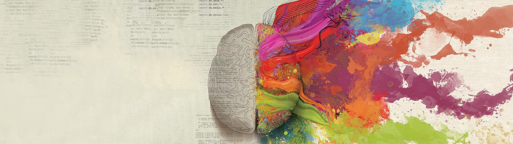

Mes formations
Formation Développeuse Web
- 04.22 - 10.22
- OpenClassrooms
Etudes en langues étrangères
- 2015 - 2018
- Université de Strasbourg
Baccalauréat série littéraire
- 2012 - 2015
- Lycée Alfred Kastler
Mes expériences
Assistante de régie :
Traductrice principale
: